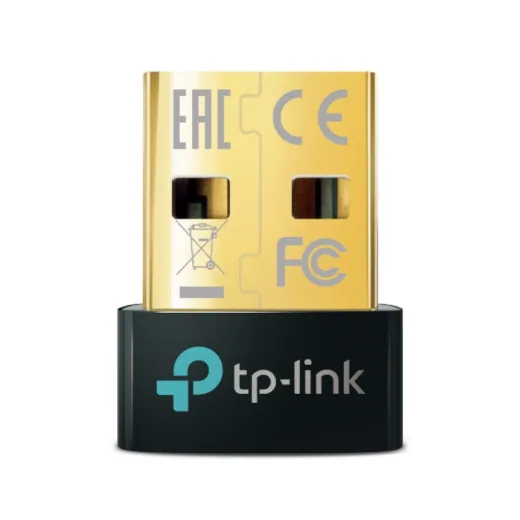
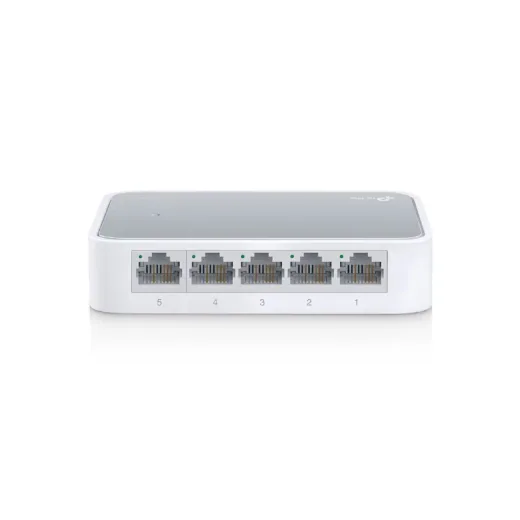
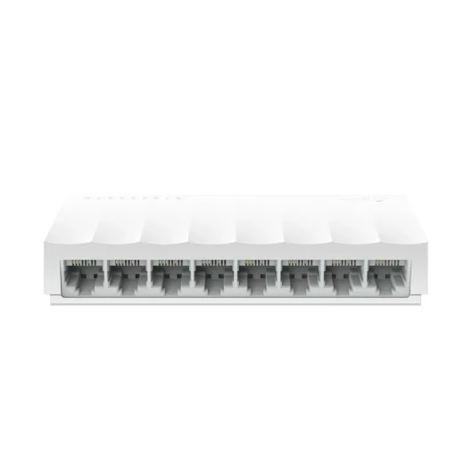
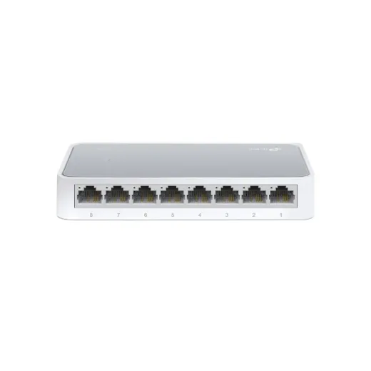
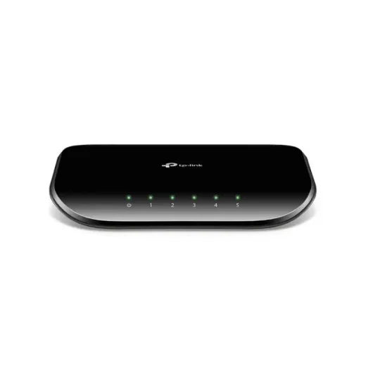

Tp-Link · Modelo UB500
Adaptador Bluetooth Usb 5.4 Nano Tp-Link Ub500
L 218.99
En Acosa
Precio en cada tienda
| Tienda | Precio | Antes | Disponibilidad | |
|---|---|---|---|---|
| Acosa | L 218.99 | — | Disponible | Ver en tienda › |
Precios referenciales tomados de cada tienda el 14 de noviembre de 2026. El precio válido es el que muestra la tienda al comprar.
Otros routers y redes Tp-Link

Switch 5 Puertos 10/100 Mbps Tp-Link P/Escritorio Tl-Sf1005dL 305En Acosa
Switch 8 Puertos 10/100 Mbps Tp-Link Para Escritorio Ls1008L 345En Acosa
Switch 8 Puertos 10/100 Mbps Tp-Link P/Escritorio Tl-Sf1008dL 395En Acosa
Switch 5 Puertos 10/100/1000 Mbps Tp-Link P/Escritorio Tl-Sg1005dL 405En Acosa Switch 5 Puertos 10/100/1000 Mbps Gigabit Tp-Link Para Escritorio Ls1005GL 445En Acosa
Switch 5 Puertos 10/100/1000 Mbps Gigabit Tp-Link Para Escritorio Ls1005GL 445En Acosa Repetidor Tp-Link 300Mbps 2.4Ghz D/Pared Access Point Re315L 545En Acosa
Repetidor Tp-Link 300Mbps 2.4Ghz D/Pared Access Point Re315L 545En Acosa Switch 8 Puertos 10/100/1000 Mbps Tp-Link Para Escritorio Ls1008GL 609.01En Acosa
Switch 8 Puertos 10/100/1000 Mbps Tp-Link Para Escritorio Ls1008GL 609.01En Acosa Switch 8 Puertos 10/100/1000 Mbps Tp-Link P/Escritorio Tl-Sg1008dL 709En Acosa
Switch 8 Puertos 10/100/1000 Mbps Tp-Link P/Escritorio Tl-Sg1008dL 709En Acosa